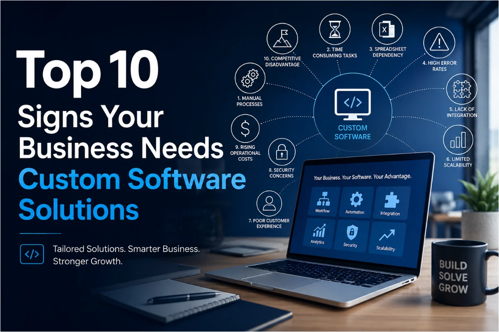

stars
FEATURED SPOTLIGHT
Medium Article
6 min read
ENTERPRISE CRM
schedule
6 min read
•
September 2026
10 Signs Your Business Needs a Custom CRM Solution
As your business grows, managing customer relationships becomes increasingly complex. What starts with spreadsheets and emails quickly leads to lost leads, team silos, and miscommunication. Discover the 10 telltale signs that prove your organization has outgrown generic tools and requires an enterprise custom CRM.
Bridge Group Solutions
Enterprise Solutions • Published on Medium